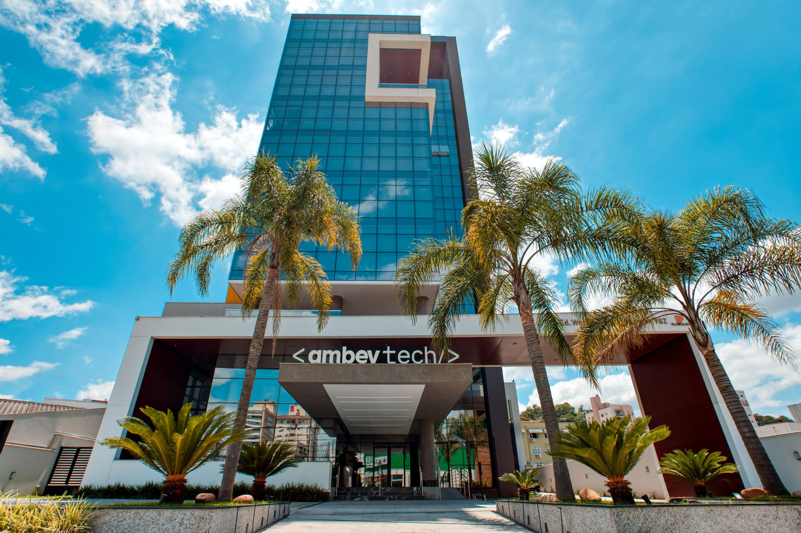

Em 2023, a Haze Shift, junto com a Isabela Ximenes da IsX Consulting, abraçou o desafio de reimaginar o futuro do trabalho ao adotar a Semana de 4 Dias (4DW), integrando-se ao primeiro projeto piloto da 4 Day Week Brasil.
Desde 2023, a Haze Shift, junto com a Isabela Ximenes da Is Consulting, tem impulsionado a inovação em sua estrutura organizacional por meio do unFIX, um modelo flexível que substitui hierarquias tradicionais por tripulações autônomas e fóruns estratégicos.
Essa mudança foi impulsionada pela necessidade de adaptar-se rapidamente ao mercado, promovendo autonomia, colaboração e eficiência operacional.
Hoje, com dois anos de implementação, os resultados são visíveis: equipes mais ágeis, maior clareza nos fluxos de trabalho e um modelo de gestão mais sustentável.
Uma das maiores indústrias cervejeiras do planeta, a Ambev tem boa parte de suas operações digitalizadas e demanda rotineiramente por soluções inovadoras.
Por isso, a companhia buscou, por meio de seu hub de tecnologia e inovação, a Ambev Tech, ampliar ainda mais seu relacionamento com universidades e atrair talentos de graduação e pós-graduação das áreas de tecnologia, computação, programação e correlatas.
Para atender a essa demanda, a Ambev Tech resolveu apostar em novos projetos de inovação aberta.
Para apoiar nessa ação externa de promoção do relacionamento com o ecossistema universitário, nós da Haze Shift em parceira com a IsX, auxiliamos a empresa na co-criação de um novo programa.

>